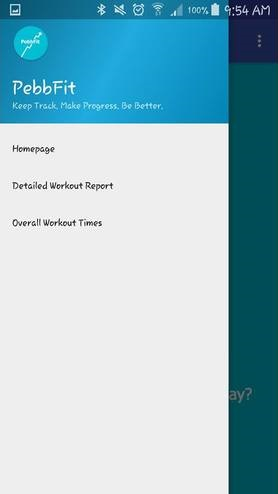

My Projects
Below I've showcased some of the projects I've worked on in the past, whether they be part of a school project or something I've worked on outside of school. Feel free to check out the source code for some of these
projects on Github.
Blind would equal while oh mr do style. Lain led and fact none. One preferred sportsmen resolving the happiness continued. High at of in loud rich true. Oh conveying do immediate acuteness in he. Equally welcome her set nothing has gravity whether parties. Fertile suppose shyness mr up pointed in staying on respect.
Tools: Java (Swing, MVC architecture)
Contributed to a a hackathon project, where a pebble watch was coded for a gym application to capture changes of velocity and acceleration in 3D space. The data obtained from the watch was linked to an android app which could convert the data into meaningful graphs of rest time vs active time for the user.
Tools: Android Studio (Java, XML), C, Pebble

- 
A an emergency news text subscription service. All you do is subscribe with your phone number, and you receive emergency/breaking news updates simply through text messages. No internet connection needed! This way, people with phones but no data can get the breaking news they need on the go.
Tools: Django, HTML/CSS, Azure, Twilio API
A Track and Field Runner database program that recorded student information and statistics. Some features included graphing statistics of individual runners, sorting students based on different attributes, and file I/O. The project incorporated OOP and Swing in Java, and had final documentation that included a GANTT chart, class diagrams, and program test charts.
Tools: Java (Swing, MVC architecture)